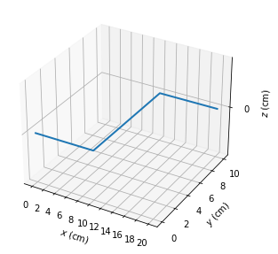

Code
import numpy as np
import matplotlib.pyplot as pltimport numpy as np
import matplotlib.pyplot as plt
bs.write_target_volume("coil.txt", "coil", (30, 15, 15), (-5, -0.5, -2.5), 1, 1)
# generates a target volume from the coil stored at coil.txt
# uses a 30 x 15 x 15 bounding box, starting at (-5, -0.5, -2.5)
# uses 1 cm resolution
bs.plot_coil("coil.txt")
# plots the coil stored at coil.txt
fields, positions = bs.read_target_volume("coil")
# reads the volume we created
bs.plot_fields(fields, positions, which_plane='z', level=5, num_contours=50)
# plots the fields we just produced
# plotting along the plane x = 5, with 50 contours

Try to create A volume of Magnetic field vectors to simulate there effects on circuitry. First hurdle is defining the circuit.
class Field(object):
def __init__(self,Dim=(10,10,10)):
self.coords= np.indices(Dim)
self.create_wire()
def create_wire(self,corners=[[0,2],[5,2],[5,8],[10,8]]):
self.wire = self.coords
for i in range(len(corners)-1):
self.wire = self.wire | (((self.coords[0] >corners[i][0] )&(self.coords[0] < corners[i+1][0])) & ((self.coords[1] == corners[i][1])&(self.coords[0] < corners[i+1][0])) & (self.coords[2] == 5))
def gen_field(self):
self.field = ((self.coords[0] < 5) & (self.coords[1] == 2) & (self.coords[2] == 2)) | ((self.coords[0] == 5) & (self.coords[1] >= 2)& (self.coords[1] < 8) & (self.coords[2] == 2))
return self.field
def get_voxels(self):
return self.coords
def plot(self):
self.gen_field()
colors = np.empty(self.wire.shape, dtype=object)
colors[self.wire] = 'blue'
ax = plt.figure(figsize=(10,10)).add_subplot(projection='3d')
ax.voxels(self.wire, facecolors=colors, edgecolor='k')
x, y, z = np.meshgrid(np.arange(0, 10, 1),np.arange(0, 10, 1),np.arange(0, 10, 1))
# Make the direction data for the arrows
u = np.sin(np.pi * x) * np.cos(20*np.pi * y) * np.cos(20*np.pi * z)
v = -np.cos(20*np.pi * x) * np.sin(20*np.pi * y) * np.cos(20*np.pi * z)
w = (np.sqrt(2.0 / 3.0) * np.cos(20*np.pi * x) * np.cos(20*np.pi * y) *
np.sin(np.pi * z))
ax.quiver(x, y, z, u, v, w, length=0.5, normalize=True)
ax.set_xlabel("x")
ax.set_ylabel("y")
ax.set_zlabel("z")
plt.show()f= Field()
f.plot()IndexError: index 3 is out of bounds for axis 0 with size 3